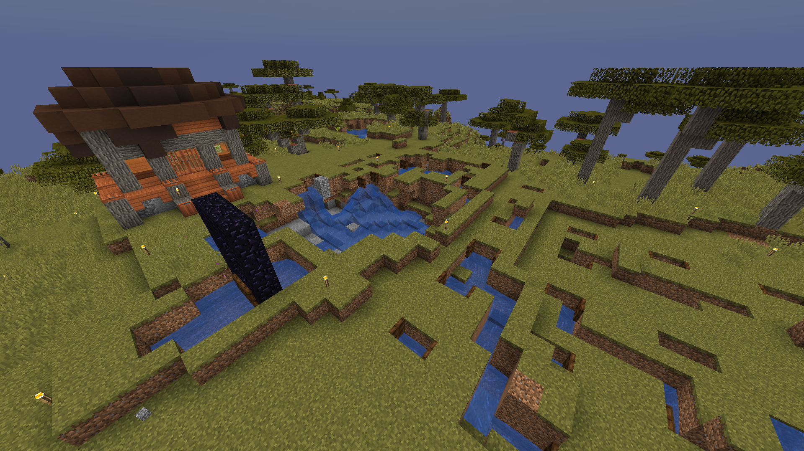

Witherfarmen

Witherfarmen var troligen serverns största projekt, till och med större än Jacobs guldfarm, men kanske inte större en Felix bank. Den bestod av flera delar och steg.Utpost Creeper
Den viktigaste delen av farmen var självklart Witherspawnern. Det var omgjort Netherfortress Manfred och Karl byggde om till en platt gångväg där det spawnade Witherskelett på båda sidor, se bakgrundsbilden. Eftersom Manfred valde ett Fortress som låg mitt i ett massivt Netherrackberg behövde de lägga cobble-slabs runtom hela Fortresset. Manfred valde detta fortresset trots att TangoTek tydligt sa att det viktigaste med farmen var att bygga den över en lavasjö, eftersom det förbättrar antalet spawns rejält.
Nästa del i farmen var Utpost Creeper. Från Witherfarmen gick en portal tillbaka till vanliga världen. Destinationen var en savann. Där byggdes ett antal hål som var och en innehöll varsin Creeper. Dessa creepers skulle sedan när det började åska bli Chargade med hjälp av Channelingtridents från Jacobs tridentfarm. Sedan skulle Creeperna döda Witherskeletten och på så sätt skulle servern få gott Witherhuvuden till riktigt många beacons.